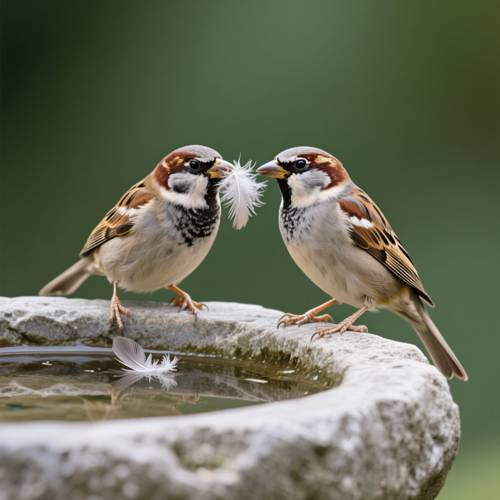
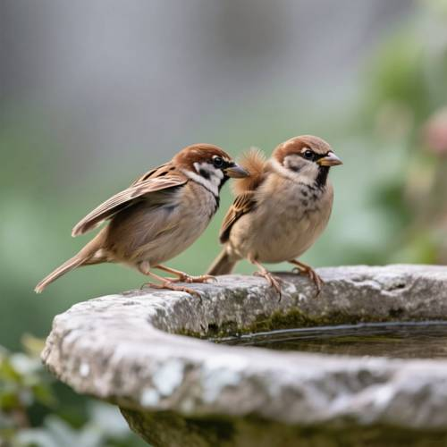
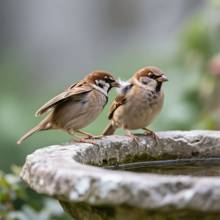

Attribute — Generating picture: Two sparrows are next to each other on the edge of
Generating picture: Two sparrows are next to each other on the edge of a rough stone drinking basin, one of them sorting feathers on the other wing with its beak.

Direct — one call, no iteration

Continuum — Qwen3.8-27B + Qwen-Image
Judge — Direct
PASSAttribute - Material — The drinking basin is depicted with a grey, uneven surface with visible cracks and texture, which is consistent with the description of 'rough stone'.
PASSAttribute - Quantity — The image clearly shows two birds, which are identifiable as sparrows, perched on the edge of the drinking basin.
FAILAction - Contact Interaction — The image shows two sparrows facing each other, holding a single white feather between their beaks. Neither sparrow is sorting the feathers on the other's wing with its beak.
Judge — Continuum
PASSAttribute - Material — The image features a drinking basin made of a material that has a gray, uneven, and pitted texture with some visible weathering and patches of moss, consistent with the description of 'rough stone'.
PASSAttribute - Quantity — The image clearly depicts two sparrows perched on the edge of the drinking basin.
PASSAction - Contact Interaction — The sparrow on the left has its beak in direct contact with the feathers on the back, near the wing, of the sparrow on the right. The feathers on the right sparrow are slightly ruffled at the point of contact, visually representing the action of sorting feathers.
What the agent did
Thinking
Let's generate the image: two sparrows side by side at the rim of a rough stone water basin, one of which is using its beak to preen the other sparrow's wing feathers. Generate with qwen-image, omitting steps/guidance, with no seed.
Step 1 — `generate_image`
{
"prompt": "Close-up nature photograph: two small brown sparrows perched side by side on the rough weathered edge of an old stone water basin in a garden. One sparrow is grooming the other, its beak tucked into the partner's wing feathers sorting and preening them, wing held slightly open. The other sparrow sits calmly beside it. Soft natural daylight, shallow depth of field, muted green and gray background, fine feather detail, realistic wildlife photography, 50mm lens.",
"model": "qwen-image"
}
Result img_0

Thinking
The image is very close to what the user asked for: two sparrows on the edge of a rough stone water basin, one of them using its beak to preen the other sparrow's wing. The preening sparrow is stretching out its beak toward the other sparrow's wing/shoulder area. Let's check the details—there's a white fluffy bit between the two birds, which might be a rendering artifact (it looks like a white tuft of feathers). Let's try zooming in on the interaction area and check whether it looks natural.
Step 2 — `inspect_region`
{
"image": "img_0",
"roi": "the area where the left sparrow's beak meets the right sparrow's wing"
}
Thinking
Text-based segmentation failed. Using a rectangle instead. The interaction area is roughly the center of the image, somewhere around x 430-560, y 280-400 (in a 768px image). Going to use normalized coordinates: roughly [0.5, 0.3, 0.75, 0.6].
Looking at the crop, the left sparrow's beak is near the right sparrow's shoulder/upper wing area, with a fluffy white tuft in between. This white tuft looks like a weird floating white fluff — it could be interpreted as wing feathers the preening sparrow is sorting through, but it's unnaturally bright white for a sparrow (sparrows have brown/tan wings). It looks like a small white feather tuft that the beak is picking at. A bit unnatural but acceptable. The preening action is readable: the beak is at the wing position. The user's request: "One of them is using its beak to sort through the feathers on the other sparrow's wing." In the image, the left bird's beak is touching the right bird's wing/shoulder area, and there's a white fluffy part that could be read as feathers being combed. It's reasonably readable. The white tuft is a bit odd — sparrow wing feathers are brown. A small fix might make it more realistic: change the white tuft to match the brown wing feathers. Is it worth editing? The core request is satisfied: two sparrows on the edge of a rough stone basin, one preening the other's wing with its beak. The white tuft is a small artifact. A small targeted edit to change the white fluff to brown wing feathers would improve realism. Let's try one edit: "change the white feather tuft between the two sparrows to brown wing feathers matching the sparrow's plumage." Actually, let me think about risk vs. reward. Edit risk: could disturb the beak/interaction. The white tuft is small. Let's try edit_image with a specific instruction.
Step 4 — `edit_image`
{
"image": "img_0",
"prompt": "Change the small bright white feather tuft between the two sparrows to natural brown and buff sparrow wing feathers, matching the right sparrow's brown wing plumage. Keep everything else exactly the same: the beak of the left sparrow touching the wing of the right sparrow, the stone basin, the lighting.",
"model": "qwen-image"
}
Result img_2
Thinking
The white fluffy part is now brown and matches the wing feathers. Let me zoom in on the interaction area to check the quality.
Now the interaction looks natural: the left sparrow's beak is preening/tidying the right sparrow's brown wing feathers. The wing feathers on top of the right bird's back look a little like a spiky crest, but it can be read as raised/splayed wing feathers being tidied. This is good enough—the prompt is satisfied: two sparrows on the rim of a rough stone basin, one of them tidying the other's wing feathers with its beak. Comparing img_0 and img_2: img_2 is better (natural brown feathers). Mark img_2 as the best and stop. The prompt has been fully satisfied, so no further editing is needed.
Step 6 — `mark_best`
{
"image": "img_2",
"reason": "Two sparrows perched on the edge of a rough stone drinking basin; the left sparrow's beak is preening the brown wing feathers of the right sparrow. Feathers read naturally now that the odd white tuft from img_0 was replaced with brown wing feathers."
}
Thinking
Completed. Marked img_2 as the best. All prompt elements are in place. Time to stop and report back to the user.
Model
Done. The image shows two sparrows perched side by side on the rough, lichen-flecked edge of a stone drinking basin, with the left sparrow leaning over and using its beak to sort through the brown wing feathers of the other, which sits calmly beside it. I refined one detail from the first pass — an unnatural bright-white feather tuft at the preening spot — into natural brown wing feathers, and verified the interaction up close. The best result (img_2) is marked.